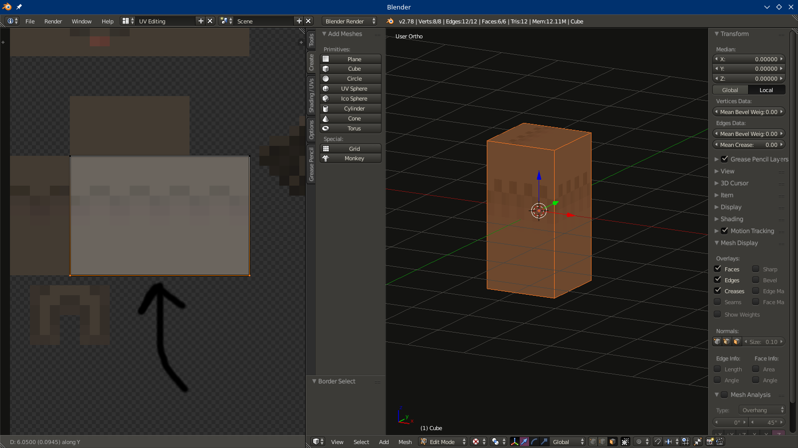
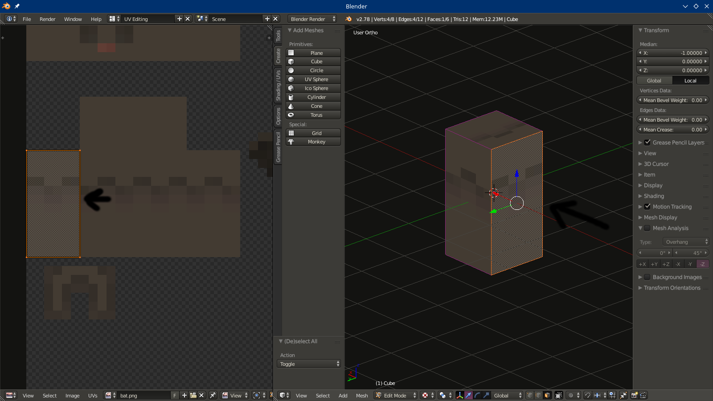

1. you start out by getting the texture ready
2. take pictures of the mob in the game from all directions so you get an idea how it looks
3. open that texture with gimp- go for Image menu - image scale - choose 1000 width and none interpolation
4. open second instance of gimp with the smaller texture
5. press R to change to rectangle selection tool
6. with it now count the pixels x, y and z.

2. save this upscaled texture with all the xyz valuese as bat1000.png
these textures with all three dimensions are 3d blocks others with only x and y are planes - 2d
- make sure that mipmaps are checked of under system in blender user preferences
- i am using the ubuntu ambience presset theme
1. add a Cube
2. scale it up - look at the bat1000 texture that we made earlier take note that 6 turns into 0.6 and 12 turns into 1.2
3. change to bat.png
2. change from object mode to edit mode by pressing TAB
3. press U to bring out the UV Mapping menu then choose Unwrap


2. press A to unselect everything
3. press B for box selection and select lower side
4. press G to move it up to where the texture ends
2. right click on the right face of the cube
3. get mouse over to the left texture - move it with G to the right
2. select the left face
3. move the texture to the far right

2. move the texture to the left
2. select the upper face
3. SHIFT and select the lower face (you may need to rotate the view down)to have them both selected
4. rotate with R by -90

2. scale it down from all side so that it fits
2. select the lower face of the cube
3. move the texture right
2. change view to top view by pressing 7 on keypad
3. select the plane press tab to go to edit mode
- select all faces by pressing a
- then press u to unvrap
2. press shift D to make a copy
3. when copied mesh is selected press Mesh button
4. choose Normals
5. select flip normals
- press w to make specials menu appear choose subdivide
- subdivide it so many times till you get 16 x 16 squares
- unwrap the plane and temporarily disable - snap to pixels
- change the view a bit
- select all the faces with A
- press E to extrude by 0.02
- only join the cubes when you are exporting dont save after you joined em
- remember to use special Minetest b3d exporter to export it